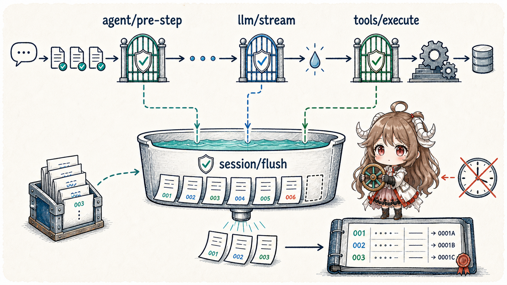
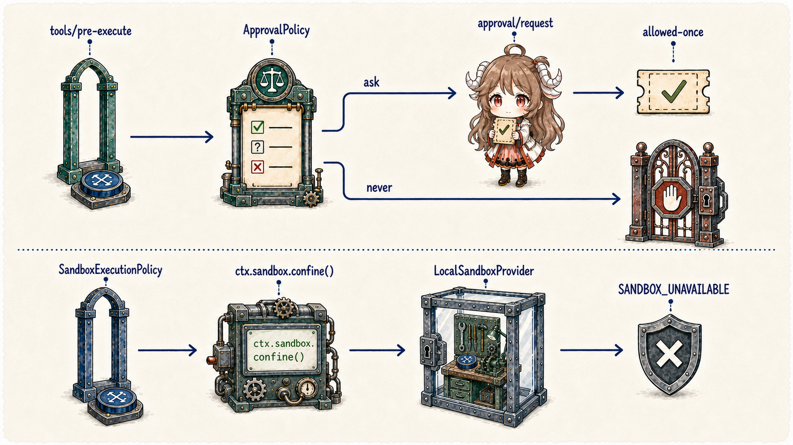
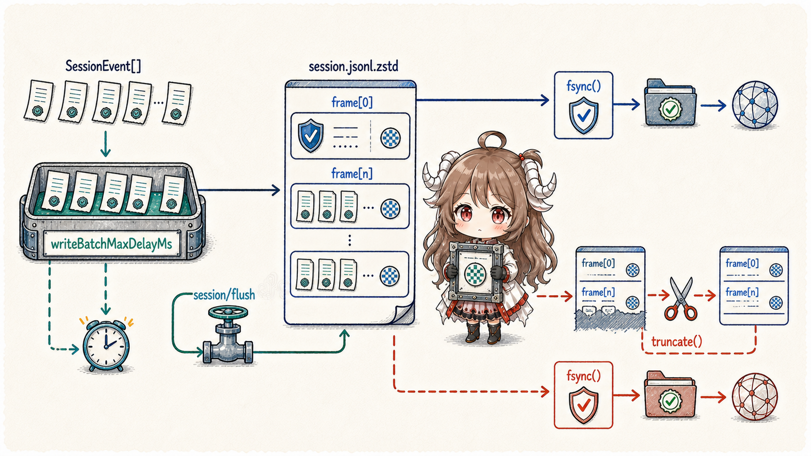
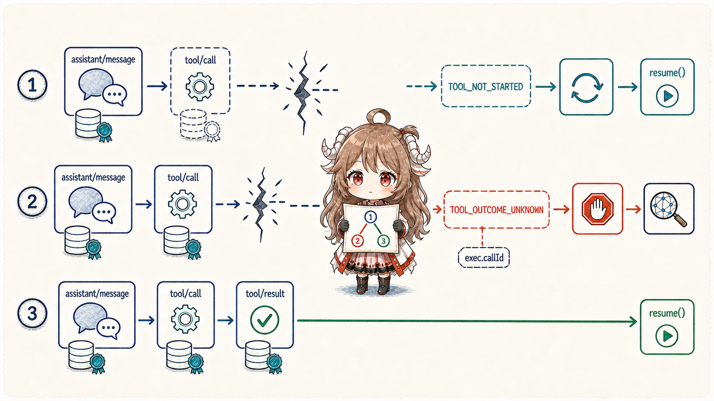

The most dangerous tool-call illusion is treating await tool.execute() as the only fact. A payment, message, or file mutation has at least four moments: the model emits a call; the runtime durably records that it is preparing the call; the external world receives the action; and the runtime durably records the result. A process can exit between any two.
DSH does not promise exactly-once effects. It does something more honest: SessionEvents retain intent and outcome, a checkpoint policy forces durability before side effects, approval and sandboxing govern separate boundaries, and repair classifies a crash tail as either “not started” or “outcome unknown.”
Reading contract.After this chapter, you should be able to explain why durable tool/call precedes the tool body; why append() is not a disk guarantee; where ask, never, and allowed-once take effect; why approval cannot replace sandboxing; and why TOOL_OUTCOME_UNKNOWN must never trigger a blind side-effect replay.
Evidence boundary.This chapter is pinned to b150a55. The first-party JSONL backend and checkpoint policy compose the durability route described here. Custom backends, answerers, sandbox providers, and third-party tools still have to honor their interfaces; source composition does not turn them into one transaction system.
1. Record the call before allowing execution
1.1 The assistant message and tool/call prove different things
The agent loop first appends the assistant message that contains tool calls. Then executeToolCalls() appends a tool/call event for each item before prepare and guard. Immediately before the actual tool body receives control, the tools/execute checkpoint makes that prefix durable. Once execution settles, tool/result enters the same event source.
The distinction matters: the assistant message proves what the model proposed; tool/call proves the runtime prepared a normalized call for the execution pipeline. Combining them would prevent crash repair from identifying whether an action crossed the dispatch checkpoint.

1.2 The tool pipeline preserves a non-bypassable order
The tools runtime runs the tools/pre-execute waterfall first. A gate may allow, deny, or ask; the approval seam maps interaction into allowed-once, rejected, cancelled, or unavailable. A monotonic guard follows pre-execute so a weaker later decision cannot reopen a closed gate. Only then does tools/execute run, followed by the post hook.
The checkpoint policy intercepts only a top-level call: exec.agent is present while exec.parent is absent. Nested dispatch shares the outer checkpoint, avoiding repeated flushes without giving child tools a way around the top-level fact boundary.
ctx.on('tools/execute', async (exec, next) => {
if (exec.agent === undefined || exec.parent !== undefined) return next()
await ctx.sessions.flush(exec.agent.session)
if (exec.signal.aborted) return abortedBeforeDispatchResult()
return next()
})2. append is not durable
2.1 The persistence backend and checkpoint policy are separate capabilities
Session append() creates an atomic in-memory event commit; a persistence plugin may write behind. That separation allows backends to batch efficiently, but “visible in the log array” does not imply “readable after a crash.” session-checkpoint-policy independently defines semantic checkpoints: which prior events must cross storage before downstream work proceeds.
2.2 Three barriers protect three irreversible advances
agent/pre-step: the preceding facts become durable before another reasoning step starts.- The first
llm/stream: a lazy flush occurs immediately before the actual provider request, avoiding synchronization when no network action occurs. - The outermost
tools/execute: the prefix containingtool/callis durable before the tool body sees control.
session/flush finishes before the downstream adapter or tool body; failure is fail-closed. Cancellation while a flush is pending returns ABORTED_BEFORE_DISPATCH instead of pretending the tool ran. That order gives “durable call, no result” a stable meaning.
3. Approval and sandboxing solve different problems
3.1 Approval decides whether this occurrence is allowed
user-approval exposes the channel-neutral one-shot request ctx.approval.request(req). ApprovalPolicy has ask and never: ask dispatches approval/request, while never rejects before interactive dispatch. An open turn records paired approval/asked and approval/decided audit events; the model sees only the resulting tool outcome.
A missing answerer, answerer failure, or cancellation fails closed. A logged approval/policy can override configuration, with the last event winning. The seam intentionally ships no built-in answerer, no “allow always,” and no full tool arguments in the request. It remains narrow and auditable.
3.2 Sandboxing decides how an allowed action may run

SandboxProvider accepts read-only, workspace-write, or danger-full-access; ctx.sandbox.confine(argv, policy) returns wrapped argv. If no provider can enforce the request, it returns SANDBOX_UNAVAILABLE instead of silently falling back to bare execution.
The local provider prefers bubblewrap and then Landlock on Linux, Seatbelt on macOS, and an ACL/restricted-token path on Windows; Windows and Landlock may report partial coverage. This is same-host filesystem-effect confinement, not a container or microVM. User approval does not grant unlimited system access, and sandboxing does not imply that a user authorized the command.
4. JSONL turns a checkpoint into a recoverable prefix
4.1 One header frame, then one frame per durable batch

The JSONL backend writes session.jsonl.zstd by default: one independent checksummed zstd frame for the header, then one frame for each durable batch. Raw JSONL is optional. writeBatchMaxDelayMs defaults to 200ms and coalesces appends in a fixed window; session/flush cancels the wait and drains the current queue.
4.2 Initial publication, append failure, and a torn tail have explicit boundaries
The first append writes the header and first batch to a temporary file and fsyncs it. POSIX uses hard-link publication followed by parent-directory fsync; Windows uses write-through rename. Later appends fsync after writing. A caught write or sync failure truncates to the previous byte length so a partial batch never becomes the committed prefix.
On read, a torn final frame retains completely decoded records, discards the torn tail, and re-encodes with synthetic closers when required. Corruption in a complete region refuses restoration. The implementation permits one live writer per session and does not own deletion. Flush therefore means “this batch crossed the backend's stated durability boundary,” not a generalized database transaction.
5. Crash repair must distinguish not-started from outcome-unknown
5.1 The durable prefix determines the permitted recovery action

| Durable prefix before crash | Repair result | Safe action |
|---|---|---|
Assistant contains a call; no tool/call | TOOL_NOT_STARTED | Dispatch again if the action is still needed |
tool/call exists; no tool/result | TOOL_OUTCOME_UNKNOWN | Stop; query external state or ask the user |
Both tool/call and tool/result exist | Completed prefix | Resume from the next step |
repair.ts synthesizes the necessary tool result, step/end, and interrupted turn/end while preserving continuous sequence numbers. The goal is not a cosmetically complete log. It is to expose uncertainty to both model and runtime.
5.2 callId is an idempotency hinge, not exactly-once magic
For side-effecting tools, DSH recommends forwarding exec.callId as an idempotency key when the external system supports one. An unknown outcome can then converge through lookup or same-key retry. When the target offers no idempotency, query, or transaction semantics, the local log cannot prove an action occurred once. Read-only or naturally idempotent calls can recover more aggressively; payment, messaging, and deletion must remain conservative.
6. Engineering consequences of this route
- First-party durability needs both backend and policy.Persistence without checkpoints may lag the effect; a policy backed by a fake flush protects nothing.
- Approval is not sandboxing.One answers “did the user agree?” and the other “what can the process touch?” Both boundaries matter.
- Fail-closed is an availability tradeoff.A missing answerer, sandbox, or flush loses an opportunity instead of silently widening authority or creating an inexplicable action.
- Verify the external world after an unknown outcome.“No local result” never implies “nothing happened remotely.”
- Custom tools should propagate callId.Connecting local identity to an external idempotency key is what makes at-least-once risk verifiable.
Part V examines another apparently harmless mutation: how compaction replaces the model-visible surface and prunes old tool results while the raw log and request header still reconstruct a request.
Source references
- session-checkpoint-policy README and implementation: three durability checkpoints, the top-level tool boundary, and cancellation semantics.
- tool-calls.ts and the tools runtime: call-event, gate, execute, and result ordering.
- user-approval README: one-shot decisions, audit events, and fail-closed outcomes.
- sandbox contract and local provider: policy modes, platform backends, and limits.
- session-persistence-jsonl README: frames, batches, fsync, publication, and torn-tail recovery.
- repair.ts: conservative repair of open tools, steps, and turns.